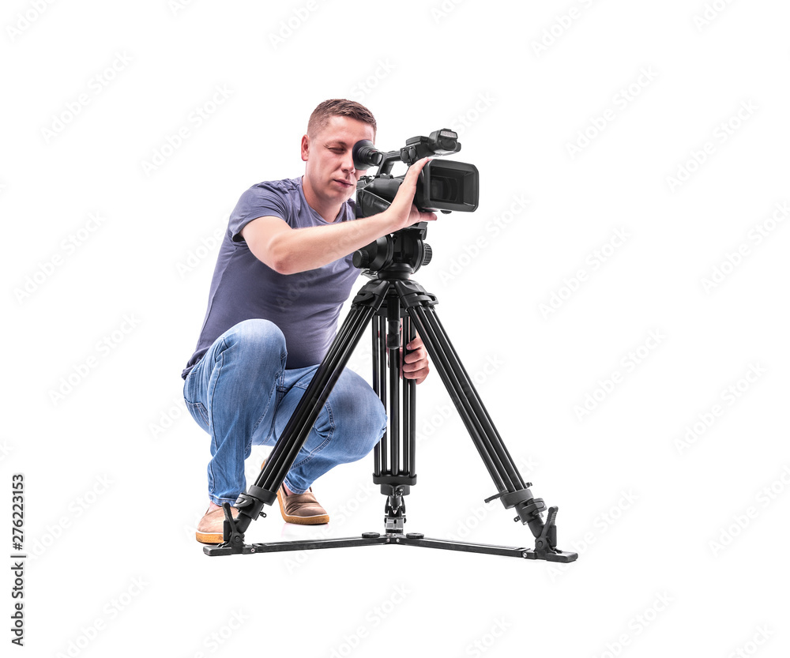

What They Do
Camera operators in television, video, and film are responsible for capturing moving images for various purposes, including entertainment, news, sports, and documentaries. They set up and operate cameras, frame shots, adjust focus and exposure, and collaborate with directors and other crew members to achieve desired visual effects.
On the Job You Would
As a camera operator, you would work on location or in studios, adapting to different environments and equipment setups. Your tasks may range from shooting live broadcasts to recording scripted scenes, requiring flexibility and attention to detail.


Why Pursue This Career?
Working as a camera operator offers the opportunity to be part of the creative process in bringing stories to life visually. Whether capturing the excitement of live events or crafting cinematic narratives, it's a role that requires technical skill, artistic vision, and teamwork. For individuals who enjoy working behind the scenes, problem-solving challenges, and being at the forefront of visual innovation, a career as a camera operator can be both fulfilling and exciting.
In my interest profile artistic was my highest catagory and this is a very creative job so I know I will like It.